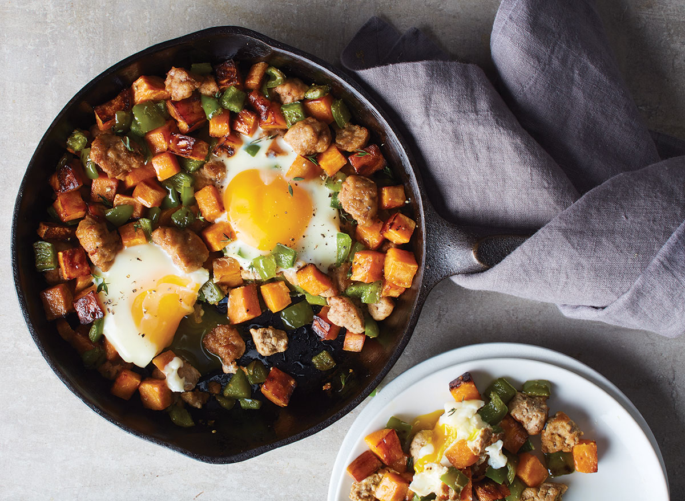
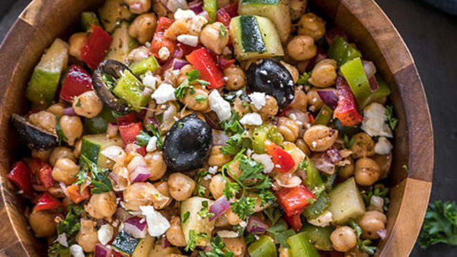
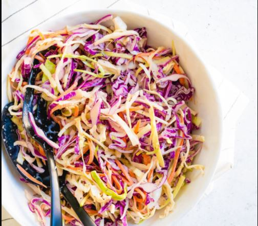

| BREAKFAST HASH WUTH SWEET POTATO AND CHICKEN SAUSAGE |
|---|
|  |
| Recipe |
| 2Tbsp olive oil. |
| 2 large sweet potatoes peeled and cut into cubes. |
| 1 red bell pepper seeded and diced. |
| 1 green bell pepper seeded and diced. |
| 2 Tbsp minced onion. |
| 1 tsp garlic powder. |
| 1 tsp ground ginger. |
| Salt and pepper to taste. |
| 5 chicken sausage links sliced. |
| MEDITERRANEAN CHICKPEA |
|---|
|  |
| 2 can chickpeas, drained and rinsed. |
| 1 medium cucumber, chopped. |
| 1 bell pepper, chopped. |
| 1/2 red onion, thinly sliced. |
| 1/2 c. chopped kalamata olives. |
| 1/2 c. crumbled feta. |
| Kosher salt. |
| Freshly ground black pepper. |
| FOR THE LEMON-PARSLEY VINAIGRETTE |
| 1/2 c. extra-virgin olive oil. |
| 1/4 c. white wine vinegar. |
| 1 tbsp. lemon juice. |
| 1 tbsp. freshly chopped parsley. |
| 1/4 tsp. red pepper flakes. |
| Kosher salt. |
| Freshly ground black pepper. |
| CRUCIFEROUS VEGETABLES |
|---|
|  |
| Recipe |
| 1/2 head green cabbage, enough for 4 cups shredded. |
| 1/2 head red cabbage. |
| 8 Brussels sprouts. |
| 1 carrot enough for 1 cup shredded. |
| 1/2 cup mayonnaise. |
| 2 Tbsp apple cider vinegar. |
| 2 Tbsp maple syrup. |
| 1/2 tsp dried dill. |
| 1/2 tsp chili powder. |
| 1 tsp kosher salt. |
| Fresh ground pepper. |